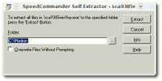

gt68xx
Dieser Artikel wurde für die folgenden Ubuntu-Versionen getestet:
Ubuntu 16.04 Xenial Xerus
Ubuntu 14.04 Trusty Tahr
Zum Verständnis dieses Artikels sind folgende Seiten hilfreich:
 Diese Anleitung beschreibt die Einrichtung von Scannern, die vom Modul
Diese Anleitung beschreibt die Einrichtung von Scannern, die vom Modul gt68xx unterstützt werden. Eine Liste der unterstützten Geräte findet sich unten auf dieser Seite. sane-gt68xx unterstützt Scanner, die auf dem Grandtech GT-6801 oder GT-6816-Chipsatz basieren. Ohne die hier beschriebene Einrichtung zeigt XSane den Scanner zwar an (eventuell mit falscher Bezeichnung), es kommt aber zu dieser Fehlermeldung:
Fehler beim Öffnen des Geräts 'gt68xx:libusb:001:005': Ungültiges Argument
Wird der Scanner erkannt?¶
Nachdem man den Scanner per USB-Kabel angeschlossen hat, kann man mit einigen Kommandos im Terminal[1] abfragen, ob der Scanner von Ubuntu erkannt wurde und erhält auch genauere Informationen. Mit dem Befehl lsusb werden alle über USB mit dem Rechner verbundenen Geräte angezeigt.
Die Ausgabe sieht dann etwa so aus, falls der Scanner erkannt wurde:
Bus 008 Device 003: ID 05d8:4002 Ultima Electronics Corp. Artec Ultima 2000 (GT6801 based)/Lifetec LT9385/ScanMagic 1200 UB Plus Scanner
Hier wurde also ein auf dem o.g. Chipsatz basierender Scanner erkannt. Genauere Informationen über das Modell erhält man mit dem Befehl[1] scanimage -L. Hier sieht die Ausgabe z.B. so aus:
device `gt68xx:libusb:008:003' is a Medion MD/LT 9385 flatbed scanner
Es handelt sich in diesem Fall um ein Gerät des Herstellers Medion mit der Gerätenummer MD 9385 handelt. Mit diesen Angaben kann nun nach der benötigten Firmware gesucht werden.
Firmware-Datei¶
Bei jedem Start des Scanners muss als erstes die Firmware in den Scanner geladen werden. Sane macht dies völlig automatisch, es benötigt nur die Firmware-Datei dazu. Die benötigte Datei kann aus einer bestehenden Windows-Installation mit installiertem Scanner kopiert werden. In der Regel findet sich die Datei aber auch direkt auf der Installations-CD des Scanners.
Die gesuchte Datei befindet sich normalerweise unter Windows in windows/system oder /system32 und heißt *.usb, bei einem Medion MD 9385 z.B. unter windows/system32/drivers/ePlus2k.usb. Alternativ kann die benötigte Firmware-Datei auch auf der Homepage des SANE-GT68xx-Backends heruntergeladen werden: gt68xx-backend  . Hat man keine Treiber-CD für den Scanner zur Hand und möchte auch Windows nicht installieren, so kann man sich die Treiber auch aus dem Internet herunterladen. Auf dieser Homepage
. Hat man keine Treiber-CD für den Scanner zur Hand und möchte auch Windows nicht installieren, so kann man sich die Treiber auch aus dem Internet herunterladen. Auf dieser Homepage  findet man beispielsweise eine Reihe von Firmware-Dateien, die bei vielen Scannern benötigt werden. Sollte die gesuchte Firmware nicht dabei sein, hilft eine Suchmaschine weiter.
findet man beispielsweise eine Reihe von Firmware-Dateien, die bei vielen Scannern benötigt werden. Sollte die gesuchte Firmware nicht dabei sein, hilft eine Suchmaschine weiter.
 Wenn man vor dem Problem steht, dass man die gesuchte Firmware zwar gefunden hat (z.B. auf der Seite des Herstellers), diese jedoch in einem selbstextrahierenden .exe-Archiv gepackt ist, kann man sich mit Wine behelfen. Hat man Wine installiert, öffnet man mit dem Programm die .exe-Datei und kann nun auswählen, wohin man die Dateien entpacken möchte (siehe nebenstehendes Bild).
Die Firmware-Datei muss anschließend mit Root-Rechten[3] nach /usr/share/sane/gt68xx/ kopiert werden. falls der Ordner nicht existiert, legt man ihn an, ggf. muss für alle Benutzer Leserecht[4] für die Firmware-Datei erteilt werden.
Konfigurationsdatei anpassen¶
Zum Bearbeiten der Datei /etc/sane.d/gt68xx.conf ist ein Texteditor mit Root-Rechten[3] erforderlich. Die Datei muss nicht für jeden unten aufgeführten Scanner bearbeitet werden. Befindet sich hier aber für den Scanner eine auskommentierte 'override'-Zeile, so muss die Auskommentierung entfernt werden. Außerdem muss eine Zeile mit der Bezeichnung der Firmware ergänzt werden, damit die richtige Firmware geladen wird.
Beispielsweise für den Medion MD9385:
# Medion/Lifetec/Tevion/Cytron MD/LT 9385: #override "artec-ultima-2000" #vendor "Medion" #model "MD/LT 9385"
muss geändert werden in
# Medion/Lifetec/Tevion/Cytron MD/LT 9385: override "artec-ultima-2000" vendor "Medion" model "MD/LT 9385" firmware "/PFAD/ZU/ePlus2k.usb"
Erster Test¶
Achtung!
gt68xx wird in der man-Page als experimentell beschrieben, Hardwareschäden sind also nicht auszuschließen!
Nun sollte beim Start der Scansoftware der Scanner richtig angezeigt werden und die Software erfolgreich starten. Beim ersten Testscan unbedingt darauf achten, dass der Scanner keine ungewöhnlichen Geräusche von sich gibt. Im Zweifelsfall sofort den Stecker des Scanners ziehen, möglicherweise handelt es sich um eine falsche Firmware-Datei.
Stromversorgung¶
Noch ein Tipp am Rande: Viele der billigen Scanner decken ihren kompletten Strombedarf über den USB-Bus und benötigen bis zu 500mA. Vor allem die USB-Anschlüsse an Notebooks, aber auch von vielen Mainboards, können diesen Strombedarf nicht decken. Dann schaltet sich der Scanner ggf. nicht ein und wird deshalb auch von keinem Betriebssystem erkannt. Die Lösung ist einfach: Der Scanner muss an einen USB-Hub mit eigenem Netzteil angeschlossen werden. Solche Hubs gibt es für um die 10 EUR.
Firmware¶
Wenn das bis dahin erfolglos war, sollte die Firmware nochmals überprüft werden. Auch die aktuellste Version des Treibers aus dem Internet bringt nicht jeden Scanner sofort zum laufen. Konkret sollte bei dem MD 9385 (wie oben im Beispiel beschrieben) die eplus2k.usb anstatt der bisher unter Windows tadellos funktionierenden gt680xfw.usb-Firmware eingesetzt werden.
Liste der von sane-gt68xx unterstützten Scanner¶
Artec Ultima 2000 (nur Product-ID 0x4002)
Artec Ultima 2000 e+
Boeder SmartScan Slim Edition
Fujitsu 1200CUS
Genius Colorpage Vivid3x
Genius Colorpage Vivid3 V2
Genius Colorpage Vivid3xe
Genius Colorpage Vivid4
Genius Colorpage Vivid4x
Genius Colorpage Vivid4xe
Genius Colorpage Vivid 1200 xe
Googlegear 2000
Lexmark X70
Lexmark X73
Medion/Lifetec/Tevion MD 4395
Medion/Lifetec/Tevion/Cytron MD/LT 9385
Medion/Lifetec/Tevion LT 9452
Medion/Lifetec/Tevion MD 9458
Mustek 1200 UB Plus
Mustek BearPaw 1200 CS
Mustek BearPaw 1200 CU (Plus)
Mustek BearPaw 1200 TA
Mustek BearPaw 2400 CS (Plus)
Mustek BearPaw 2400 CU (Plus)
Mustek BearPaw 2400 TA (Plus)
Mustek BearPaw 2448 CS Plus
Mustek BearPaw 2448 TA Plus
Mustek Plug-n-Scan 2400 M
Plug-n-Scan 2400 MT
Mustek ScanExpress A3 USB
Mustek ScanExpress 1200 UB Plus
Mustek ScanExpress 1248 UB
Mustek ScanExpress 2400 USB
Mustek ScanMagic 1200 UB Plus
Packard Bell Diamond 1200 (Plus)
Packard Bell Diamond 2450
Plustek OpticPro 1248U
Plustek OpticPro U16B (+)
Plustek OpticPro UT16B (+)
Plustek OpticSlim 1200
Plustek OpticSlim 2400
RevScan 19200i
Trust Compact Scan USB 19200
Trust Flat Scan USB 19200
Trust 240TH Easy Webscan Gold
 Übersichtsartikel
Übersichtsartikel- Erstellt mit Inyoka
-
 2004 – 2017 ubuntuusers.de • Einige Rechte vorbehalten
2004 – 2017 ubuntuusers.de • Einige Rechte vorbehalten
Lizenz • Kontakt • Datenschutz • Impressum • Serverstatus -
Serverhousing gespendet von